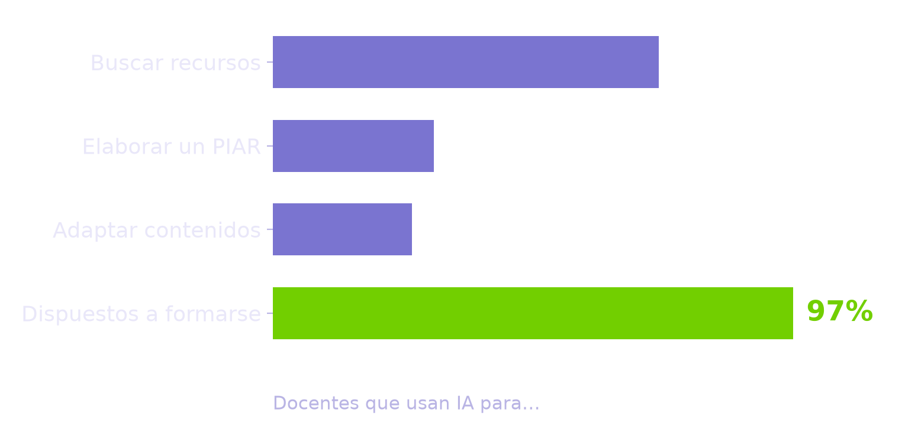
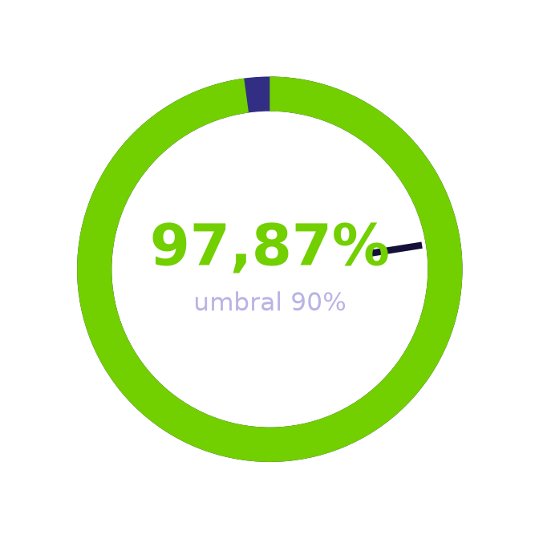
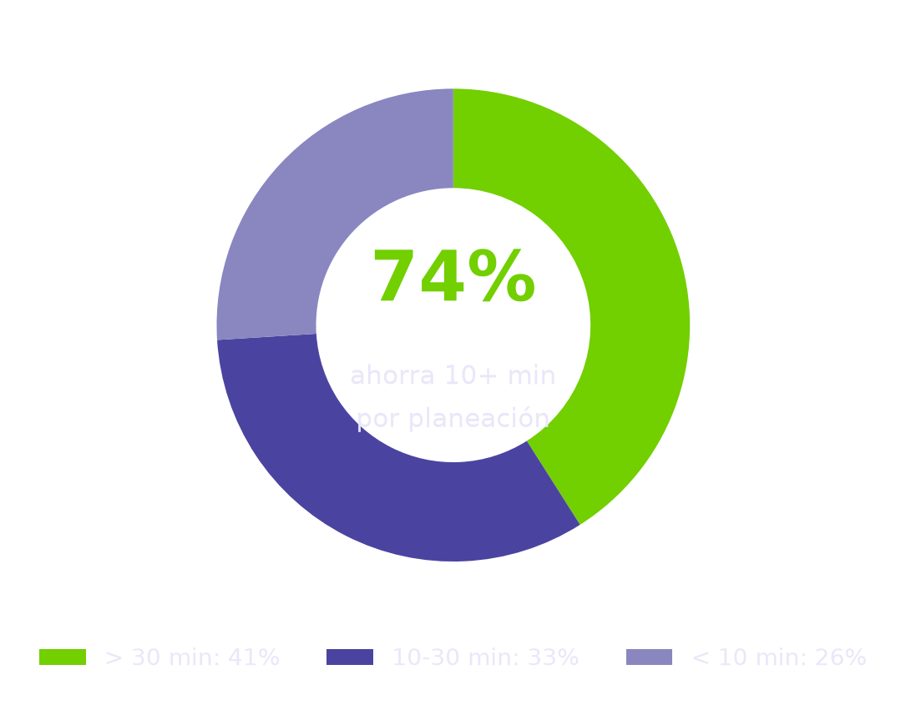
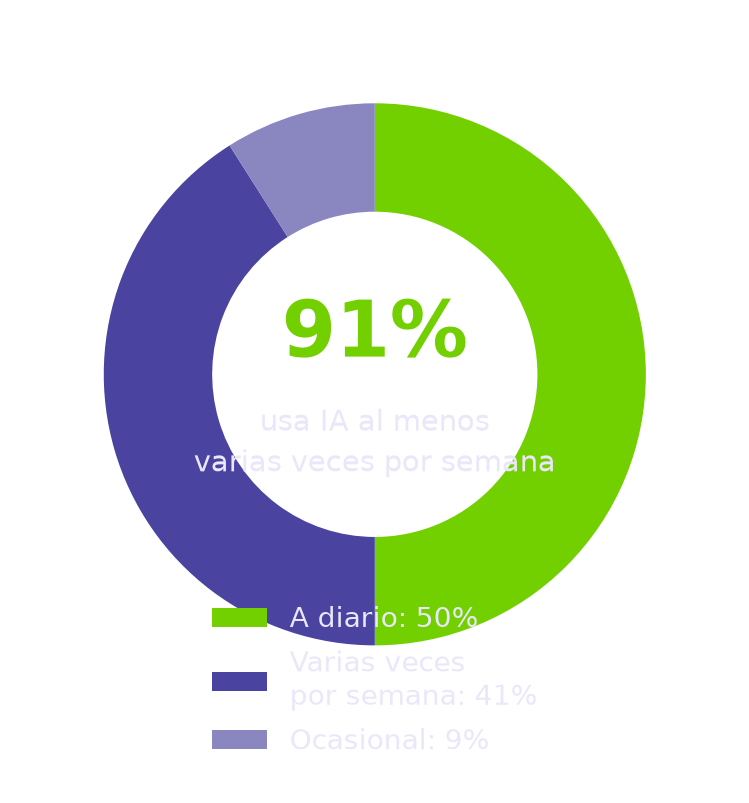
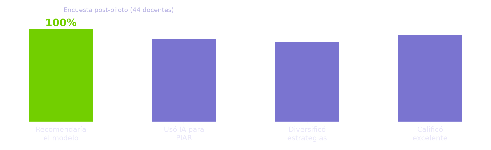

Sin internet en el aula
I. E. Técnica Alfonso López Pumarejo
Turbaco, Bolívar
Proyecto Aplicado · Maestría en Educación Mediada por las TIC
Un modelo de acceso abierto que acompaña a los docentes colombianos en la planeación de clases para todos sus estudiantes, probado en tres instituciones del país.
La pregunta que nos movió
Los docentes colombianos ya usan inteligencia artificial… pero casi nunca para lo que más se necesita: llegar a todos los estudiantes.
de los docentes usa IA para preparar sus clases
la usa para incluir a quienes se les dificulta aprender
Esa brecha — del 79% al 30% — es exactamente el problema que este proyecto vino a resolver.
El contexto
Trabajamos con tres instituciones espejo de la realidad colombiana: tres departamentos, dos niveles educativos y condiciones tecnológicas radicalmente distintas.
Turbaco, Bolívar
Madrid, Cundinamarca
Itagüí, Antioquia
La pregunta que guió todo
¿Cómo puede un modelo de asesoría mediado por inteligencia artificial generar condiciones para la integración de estrategias inclusivas en la planeación docente de tres instituciones educativas públicas colombianas con contextos diferenciados?
El CONPES 4144 ubica la educación entre los sectores prioritarios para la adopción de la IA, pero esa política aún no llega al aula. Mientras tanto, la norma exige el PIAR (Decreto 1421 de 2017) y los docentes no tienen tiempo, acompañamiento ni herramientas. Este proyecto llena ese vacío con un modelo concreto, probado en contextos reales.
Lo que nos propusimos
Analizar la contribución de un modelo de asesoría mediado por inteligencia artificial en la integración de estrategias para la planeación docente y atención a la diversidad en tres instituciones educativas públicas con contextos diferenciados de Colombia.
Diagnosticar los niveles de conocimiento, uso y disposición de los docentes frente a la IA aplicada a la planeación inclusiva.
Diseñar un modelo de asesoría con principios DUA, requerimientos del PIAR y herramientas de IA generativa, adaptado a las condiciones de cada institución.
Implementar una fase piloto del modelo de asesoría en las tres instituciones educativas participantes.
Evaluar la contribución del modelo a partir de la percepción docente y las evidencias piloto de planeación.
El diagnóstico · 43 maestros
¿Para qué usan la IA los docentes?

la ha usado para elaborar un PIAR
para adaptar contenidos a estudiantes con discapacidad
está dispuesto a formarse — no falta voluntad
Los fundamentos
Cinco líneas de conocimiento convergen en el objeto de estudio: la IA en educación, la inclusión, el DUA, los modelos de asesoría y la brecha digital.
La IA personaliza el aprendizaje y libera al docente de tareas repetitivas, pero solo funciona con formación y acompañamiento (García-Peñalvo, 2023; Romani Pillpe et al., 2025).
El Decreto 1421 de 2017 obliga a elaborar Planes Individuales de Ajustes Razonables; entre la norma y el aula hay una brecha que este proyecto interviene (Díaz-Piñeres et al., 2020).
Tres principios —representación, acción y expresión, implicación— estructuran cada prompt del modelo (CAST, 2018; Tobón Gaviria, 2020).
El acompañamiento situado y participativo transforma más que los cursos genéricos (Aravena-Kenigs et al., 2023; Félix Tipián et al., 2026; UNESCO, 2024).
El 75% de los docentes de Itagüí tiene internet en el aula; en Turbaco y Madrid, el 0%. El modelo se adapta a cada condición (Marulanda y Collazos Aldana, 2024).
Cómo lo hicimos
Un enfoque mixto que integra lo cuantitativo y lo cualitativo en un ciclo de cuatro fases (Creswell y Creswell, 2018; Kemmis et al., 2014).
Encuestas y análisis estadístico para medir; entrevistas y análisis temático para comprender.
43 docentes de las tres IE: 19 de Madrid, 12 de Turbaco y 12 de Itagüí; submuestra de 14 entrevistas.
Encuesta diagnóstica, rúbrica de expertos, encuesta de talleres, encuesta post-piloto y entrevistas digitales.
Diagnóstico → diseño del modelo → implementación piloto → evaluación y sistematización.
Nuestra respuesta
Materializado en un sitio web de acceso abierto, construido con los hallazgos del diagnóstico.
Construido con los hallazgos del diagnóstico; disponible para cualquier institución del país.
Instrucciones con rol, contexto y restricciones que generan planeaciones inclusivas bajo los principios del DUA.
Basado en Gemini: acompaña la planeación cotidiana del docente.
Tres talleres presenciales y guías de planeación rápida.
«La IA sugiere, organiza y diversifica opciones; el docente decide, adapta y contextualiza.»
Validación experta
Dos expertos externos —Carlos Andrés Caro Taborda y Osvaldo Mercado Barrios— evaluaron los 10 componentes del modelo, superando ampliamente el umbral del 90% propuesto.

El piloto · 3 instituciones
ahorra más de 30 minutos por planeación
ahorra 10 minutos o más por planeación
utilidad de los prompts especializados
usa la IA a diario tras el piloto



En las entrevistas digitales, los docentes pasaron de atribuir las dificultades al estudiante a reconocer que muchas veces la barrera está en el diseño de la enseñanza.
Qué aprendimos
Con herramientas gratuitas —Gemini y ChatGPT— y guía clara, la adopción despega.
El 74% ahorró 10 minutos o más por planeación; ese tiempo se libera para atender al estudiante.
Presencia, seguimiento y confianza: el factor que hace sostenible el cambio.
«Al inicio sentía mucho temor al usar la IA; luego de varias intervenciones grupales y dos individuales, me arriesgué»
— Docente participante del piloto
Para cerrar
Un modelo de asesoría mediado por IA es pertinente y efectivo para la planeación inclusiva, incluso en contextos tecnológicos muy distintos.
La accesibilidad de las herramientas importa, pero no basta sin formación y acompañamiento.
Los prompts especializados y el acompañamiento personalizado son los componentes más valorados.
El modelo es replicable: queda disponible en acceso abierto para cualquier institución del país.
Completar la cobertura del piloto en Madrid (Cundinamarca)
Diseñar una fase de seguimiento a mediano plazo para medir la sostenibilidad del hábito
Fortalecer las cláusulas éticas en los prompts y la formación en revisión crítica
Potencial especial en contextos rurales y de alta vulnerabilidad.
para que ningún estudiante quede por fuera.
El equipo


Proyecto Aplicado para optar al título de Magíster en Educación Mediada por las TIC · Universidad Tecnológica de Bolívar.